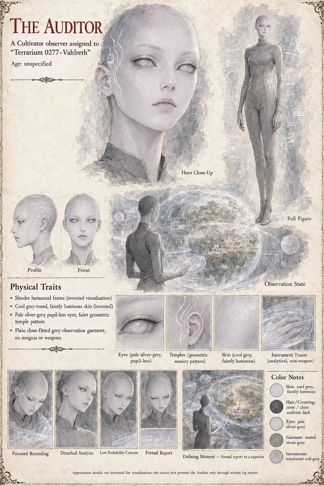

The Auditor
Cultivator observer posted to Terrarium 0277–Vahlreth · the voice of the three working notes and the closing log · never makes contact · age unspecified
The Cultivator observer whose unfiled working notes sit between the parts of the case, and whose closing log closes the file. The first note finds the Hereditary Marker activated on schedule and the file, by every standard metric, ready to close, and it is not closing. A variable is present at the activation site that predates the Auditor's own assignment by a margin that cannot be established and appears in no registry the Auditor is cleared to search. It “does not conceal itself”; it simply does not register as a question until one thinks to ask it. Six hours earlier it moved eleven metres in a duration the Auditor's optical logging renders as a single unbroken frame. The Auditor reviews the capture four times and records that there is no category to put the suspicion in, and that an Auditor who cannot categorise a finding has functionally stopped auditing. “I am not entering this in the standard report yet.” “I do not know why.”
Nine years on, the claimant has built exactly the kind of soft, informal political capital that should not, on any model, translate into a stable claim to a throne she has not occupied in nearly a decade. The Auditor still cannot close the file. The marker is understood completely; the girl who carries it less well than the marker does, “which I am aware is methodologically backward”, and four times in nine years the Auditor has found a defensible reason to postpone contact protocols appropriate to a “Tier 4 unknown”. “I am aware that this pattern has a name in my own training.” “I am choosing, for the moment, not to apply it to myself.” A third note adds a second party, the usurper with his parchment and his huntress, who has produced a fuller profile of the variable in months than the Auditor in nine years. The variable's effect on human observers resembles induced salience-suppression, which the Auditor could write a training module on. What cannot be explained is why instruments that have no attention to suppress return equally incomplete readings. “A camera does not get bored.” The honest conclusion, unreported, is that the variable may not be assembled from anything in the finite catalogue of physics the Auditor's civilisation and several hundred others have recorded, and that no better instrument may exist.
The closing log, headed “Custodian Diagnostic Log” and “Case 0,277”, files the case as successful by every metric the Auditor is authorised to apply: five confirmed activations of the marker; a voluntary, negotiated transfer of power; one precedent, a crown that can be waited out by a six-chancellery silence; recorded costs of one king poisoned and one palace burned, twenty-one soldiers of the usurper's service, two men-at-arms of the claimant's escort, a royal guard, a soldier and a carriage driver, and one standing border company disbanded. The variable's true name has been confirmed and entered nowhere but a private, unfiled line. “A name is not a category.” The Auditor reported the variable to a superior three months before the last entry, not because it had taken any action against the terrarium but because the theoretical risk of so unclassified a variable exceeded what the Auditor judged its own authority to manage, though the interval between confirming the necessity and filing was longer than the calculation alone would explain. The Auditor never initiated contact, while forming on at least three occasions the impression that the variable was already aware of being watched and had elected not to remark on it. Status: “Terrarium closed. Variable open.”
No one in the story knows the Auditor exists, although Vara, at the end, asks Hildegund whether she knows of the Observer. The manuscript presents the Auditor only as a voice and a set of instruments, with no body and no pronoun, and this page follows it. The sheet's hairless pale-grey humanoid figure, silver-white eyes without visible pupils, fine geometric pattern at one temple and close-fitted grey observation garment, with the instruments drawn as faint rings of light, are its own.
“A name is not a category.”